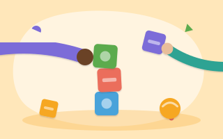
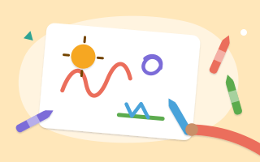
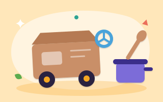
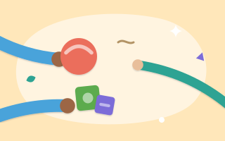
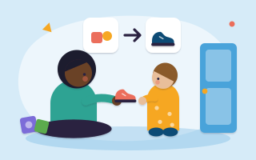
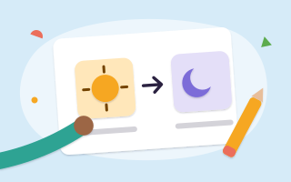
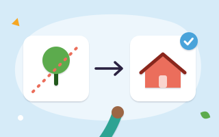
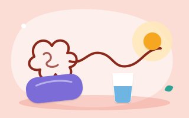
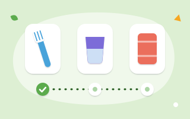

Componentes
Todas as peças e estados numa página. Cada bloco usa só as classes de componentes.css.
Cores
papel
#F6F4F9
superficie
#FFFFFF
superficie-funda
#ECE8F3
linha
#DCD6E6
linha-forte
#7E7591
tinta
#2A2140
tinta-suave
#574B66
tinta-fraca
#6B6078
sol
#F6A723
sol-claro
#FFE7BA
sol-tinta
#744400
acao
#2A2140
acao-realce
#40346A
sobre-acao
#FFFFFF
link
#4B32B8
foco
#5A3FD1
cor-do-navegador
#F6F4F9
brincar-fundo
#FFE7BA
brincar-cor
#F6A723
brincar-tinta
#744400
transicoes-fundo
#D6EBF8
transicoes-cor
#4AA3DA
transicoes-tinta
#0F4C75
noite-fundo
#E4DFF8
noite-cor
#7C6CD8
noite-tinta
#3A2D8A
emocoes-fundo
#FBDDD5
emocoes-cor
#EB6E5B
emocoes-tinta
#8A281C
autonomia-fundo
#DDEFD3
autonomia-cor
#5CAB4E
autonomia-tinta
#23591C
cuidadores-fundo
#D2EEE8
cuidadores-cor
#2EA393
cuidadores-tinta
#0E584E
neutro-fundo
#E9E5EF
neutro-cor
#9A91AB
neutro-tinta
#453C55
creme
#FBF6EC
areia
#EDE4D6
brincar-aguada
#FBEDCB
transicoes-aguada
#DFEBF3
noite-aguada
#E9E5F4
emocoes-aguada
#F7E3DC
autonomia-aguada
#E3EDDC
cuidadores-aguada
#DDECE8
neutro-aguada
#EEEAF3
brincar-meio
#DDA94A
transicoes-meio
#7BA3C0
noite-meio
#9488C4
emocoes-meio
#D0796A
autonomia-meio
#8FAE82
cuidadores-meio
#6DA79F
neutro-meio
#A99FB8
ameixa-meio
#55456E
ok-fundo
#DDEFD3
ok-tinta
#23591C
ok-linha
#5CAB4E
atencao-fundo
#FFF0D2
atencao-tinta
#6A4200
atencao-linha
#B97A0E
cuidado-fundo
#FBDDD5
cuidado-tinta
#8A281C
cuidado-linha
#C9513E
info-fundo
#ECE8F8
info-tinta
#2A2140
info-linha
#7C6CD8
mesa
#E6E1EE
Texto
Saiba o que fazer hoje
Hoje com Lia
Outras que também combinam
Por que apareceu para Lia
Texto de apoio: como começar, por que pode ajudar e como adaptar.
Corpo: convide a criança a escolher o que quer explorar e acompanhe a iniciativa dela por alguns minutos.
Miúdo: 3 sugestões · regras v1 · catálogo 0.1.0
Botões
Campos
Dica do campo.
Escreva um apelido para continuar.
Opções do quiz
Pergunta 5 de 12Quiz de Lia
Etiquetas
Avisos e recados
Informação
Prévia de amanhã: só troca a ordem das sugestões compatíveis.
Tudo certo
Respostas guardadas neste aparelho.
Atenção
O navegador não deixou salvar. Esta sessão pode se perder.
Cuidado
Interrompa a sugestão que causou desconforto.
Anotado: conseguimos usar. Isso não mede aprendizagem.
Avatares
Ícones
Ilustrações por família













Ilustrações gerais